Somaiya Vidyavihar University · K J Somaiya School of Engineering
Cloud Computing · Mini Project Report
Cloud Computing Experiments integrated with the Somaiya AI Use Case
KJS-CES-01: Climate Intelligence for Heatwave Monitoring, Prediction and Early Warning
| Student | Ayushi Ranjan |
| Roll No. | 16014223028 |
| Batch | B1 |
| Submission | Individual |
| Use case | Case 5 · KJS-CES-01 · Climate Intelligence for Heatwave Monitoring, Prediction and Early Warning |
| Experiments mapped | 2 Containerization, Docker and Docker Hub · 3 Application Deployment using Kubernetes · 7 Cloud Cost Optimization through Resource Right-Sizing · 8 FinOps Principles and Instance-Type Comparison |
| Demonstration video | https://drive.google.com/file/d/1VtWn7bEx814fL0UOkdP6OPuQMR9Il3yf/view?usp=sharing |
| Source code | https://github.com/ayushiii2707/CC-Mini-Project---Heatwave-Forecast |
| Docker images | https://hub.docker.com/u/ayushiranjan27 · heatguard:2.0 (backend) · heatguard-web:2.1 (frontend) |
| Date | 11 October 2026 |
https://drive.google.com/file/d/1VtWn7bEx814fL0UOkdP6OPuQMR9Il3yf/view?usp=sharing
The video shows the landing page and dashboard, the containers under Docker Compose, the images on Docker Hub,
the Kubernetes deployment (pods, services, self-healing, scaling) and the Experiment 7/8 results.
| Image | What it contains | Platforms | Used in experiments |
|---|---|---|---|
ayushiranjan27/heatguard:2.0 | Backend: FastAPI + 7 ML models + IMD rules | linux/arm64, linux/amd64 | 2, 3, 7, 8 |
ayushiranjan27/heatguard-web:2.1 | Frontend: nginx serving the landing page and dashboard, proxying /api/ | linux/arm64, linux/amd64 | 2, 3 |
ayushiranjan27/nginx-exp2:1.0 | Exp 2 manual task (nginx pushed to own repository) | linux/arm64 | 2 |
Run the complete application on any machine with Docker: docker compose up -d, then open http://localhost:8080
(landing page), /dashboard and /api/docs. On the Kubernetes cluster the same images are served at http://localhost:30080.
| Path | Contents | Experiment |
|---|---|---|
scripts/ | download_imd.sh, prepare_data.py, train.py: data and model training | AI |
app/ | Backend API (main.py), features.py, severity.py (IMD rules), cities.py | AI · 2 |
frontend/ | Landing page, dashboard, assets, vendored libraries, nginx config, Dockerfile | 2 |
Dockerfile, docker-compose.yml | Backend image; both services run together | 2 |
experiments/exp2_docker.sh | Build, run, test, push (multi-arch) and pull-back verification | 2 |
k8s/ | kind-config.yaml, api.yaml, web.yaml (Deployments + Services) | 3 |
experiments/exp3_kubernetes.sh, release_frontend.sh | Deploy, scale, self-heal, rollback, rolling updates with availability checks | 3 |
loadtest/loadtest.py, experiments/run_config.py | Fixed workload and per-configuration measurement (docker stats, latency, cost) | 7 · 8 |
experiments/rightsize.py | Right-sizing rule (peak × buffer) | 7 |
experiments/exp8_configs.json, summarize.py | Pre-defined target and configurations; tables, charts, target check | 8 |
experiments/results/ | All raw logs, docker stats CSVs, summaries, terminal captures (v1 in archive_v1/) | 2 · 3 · 7 · 8 |
tests/ | 18 pytest tests including invalid inputs | Testing |
HeatGuard is a working prototype of the heatwave early-warning use case. It uses real India Meteorological Department (IMD) gridded daily maximum-temperature data for 2014–2024, forecasts the maximum temperature for each of the next 7 days for ten Indian cities with machine-learning models, and converts every forecast day into a heatwave alert using IMD's published criteria. On the unseen year 2024 the forecast error grows from 0.883 °C (day 1) to 1.542 °C (day 7), lower than both baselines at every horizon; next-day alerts detect 90% of actual heatwave city-days, and alerts for days 5–7 are labelled low-confidence. The system is a FastAPI backend and an nginx-served frontend (animated landing page and dashboard). Experiment 2 packages both as Docker images and publishes them on Docker Hub; Experiment 3 runs them on Kubernetes with scaling, self-healing, rollback and zero-downtime rolling updates; Experiment 7 right-sizes the backend from measured usage (estimated hourly cost -42.7%); Experiment 8 compares three instance sizes under the same workload against a target fixed in advance. All results come from real runs on the student's machine; costs are estimates.
Problem. Heatwaves in India are increasing in frequency, intensity and duration and affect public health, agriculture and economic activity. Severity varies by region, so timely, region-specific warnings are needed (use-case document KJS-CES-01, §6).
Objectives.
| In scope | Out of scope (see Limitations) |
|---|---|
| IMD 1°×1° gridded daily Tmax 2014–2024, ten city grid cells | IoT Automated Weather Stations (hardware) |
| 7-day Tmax forecast (one ML model per day) + IMD rule-based severity | Humidity/heat-index inputs, numerical weather model input |
| Landing page, dashboard, REST API | LLM-generated multilingual advisories (future work) |
| Docker, Docker Compose, Docker Hub, Kubernetes, measured right-sizing and costing | Real cloud VM deployment and billing (costs are estimates) |
.GRD file per year, float32, 31 × 31 grid (7.5–37.5 °N, 67.5–97.5 °E), 99.9 = missing; file sizes checked
(1,403,060 bytes for 365-day years, 1,406,904 for leap years).scripts/download_imd.sh; the IMD server is slow and dropped connections (2017 needed three attempts), so the script
retries and accepts only full-size files.scripts/prepare_data.py extracts the grid cell of each of ten cities (Delhi, Jaipur, Lucknow, Patna, Ahmedabad,
Nagpur, Kolkata, Bhubaneswar, Hyderabad, Chennai): 40,180 daily rows; grid orientation verified (sea cells missing, Ladakh cold, Delhi ≈ 17 °C in
January and ≈ 40 °C in May).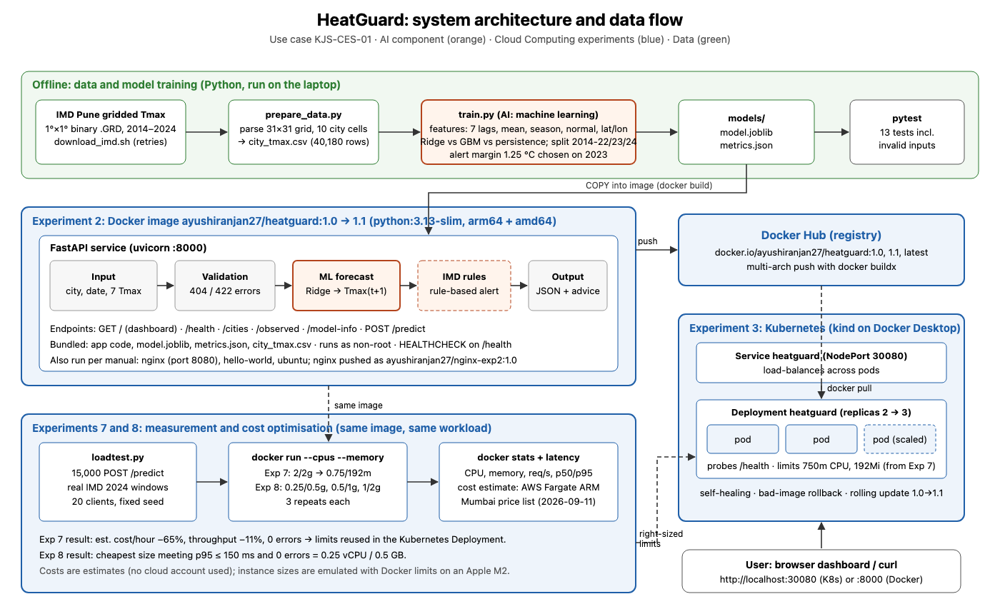
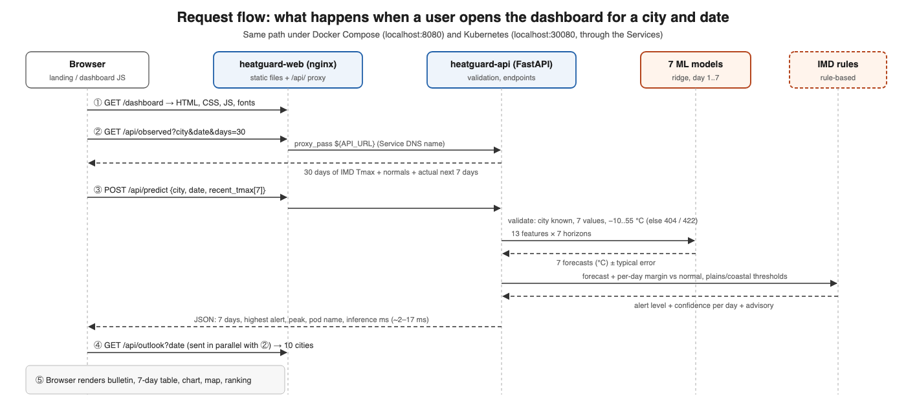
A heatwave warning is most valuable exactly when demand peaks: during a hot spell many people open the dashboard at once, and the service cannot be down while it is being updated. Packaging the backend and frontend as separate images (Exp 2) means each can be rebuilt, versioned and moved to any machine unchanged. Running them on Kubernetes (Exp 3) adds replicas, health probes and self-healing, so a crashed pod does not take the warning offline, and rolling updates let a retrained model or a new interface be released without an outage. Because such a service runs all year but is busy mainly in summer, paying for idle capacity is the main waste; Exp 7 measures how much of the allocated capacity is really used, and Exp 8 picks the cheapest size that still meets a stated response-time and throughput target.
| Layer | Tools (versions as run) |
|---|---|
| Language / ML | Python 3.13, NumPy 2.5.4, scikit-learn 1.9.1, pandas 3.0.6 (training only), joblib 1.6.0 |
| Backend | FastAPI 0.143.0, Uvicorn 0.54.0 (image python:3.13-slim, non-root) |
| Frontend | HTML/CSS/JavaScript (landing page + dashboard), Chart.js 4.4.1, Leaflet 1.9.4, Natural Earth boundaries (India view), fonts Fraunces / IBM Plex (SIL OFL), nginx 1.27 (unprivileged) |
| Testing / load | pytest 9.1.1, httpx 0.28.1 (async load generator) |
| Containers (Exp 2) | Docker Desktop engine 29.7.2 (arm64), Docker Compose, docker buildx, Docker Hub |
| Orchestration (Exp 3) | kind v0.33.0 (Kubernetes v1.37.0), kubectl v1.36.1 |
| Measurement (Exp 7, 8) | docker stats, experiments/run_config.py, matplotlib 3.11.2 |
| Hardware | Apple MacBook Air M2, 8 GB RAM (Docker VM: 8 CPUs, 3.8 GiB) |
The four experiments are not separate demonstrations: they are consecutive stages in the life of the same two images. The AI component produces the trained models; Experiment 2 packages and publishes them, Experiment 3 runs and operates them, Experiment 7 measures what the backend really needs and feeds new limits back into the Kubernetes deployment, and Experiment 8 decides how large each backend replica should be.
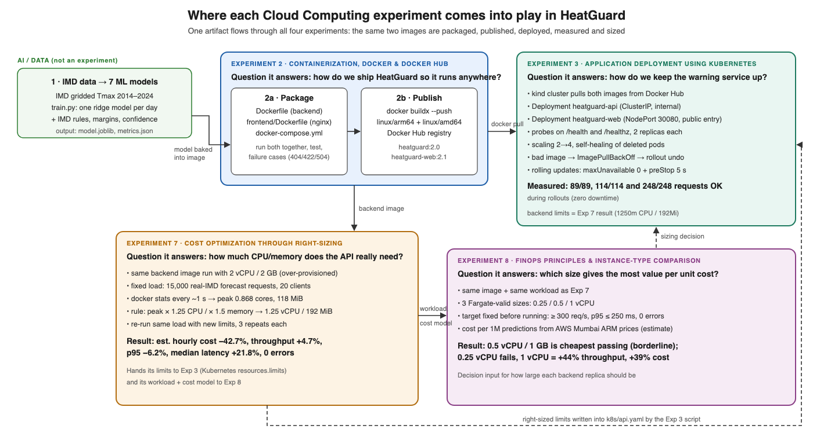
| Stage | Experiment | Role in HeatGuard | Key files | Output passed on |
|---|---|---|---|---|
| Package | Exp 2 | The backend (code + 7 trained models + IMD city data) and the frontend become two Docker images; Compose runs them together | Dockerfile, frontend/Dockerfile, docker-compose.yml | Two runnable images |
| Publish | Exp 2 | Both images pushed to Docker Hub for arm64 and amd64, then pulled back and run to prove they work | experiments/exp2_docker.sh | Public images on Docker Hub |
| Deploy & operate | Exp 3 | The Hub images run on Kubernetes: replicated, self-healing, scalable, updated without downtime | k8s/*.yaml, exp3_kubernetes.sh, release_frontend.sh | Live service on localhost:30080 |
| Measure & right-size | Exp 7 | The backend image is loaded with 15,000 real forecast requests; measured peaks set new CPU/memory limits | loadtest.py, run_config.py, rightsize.py | Limits 1250m / 192Mi → Kubernetes |
| Choose a size | Exp 8 | Same workload on three instance sizes against a pre-defined target; cheapest passing size identified | exp8_configs.json, summarize.py | Sizing decision (0.5 vCPU, borderline) |
| Exp 2 | A warning system must be deployable anywhere, identically. A district control room, a university server or a cloud VM must run exactly the forecasting service that was validated. Docker images freeze the code, the 7 trained models and the IMD data together; Docker Hub lets anyone pull them for Intel or Apple machines. |
| Exp 3 | Warnings must stay online during the heat peak and during updates. Kubernetes keeps several copies of each service, replaces failed ones, scales the public frontend when many people check the forecast, and rolls out a retrained model or a new interface without dropping requests (measured). |
| Exp 7 | The service runs all year but is busy mainly in summer. Reserving large machines "to be safe" wastes money for most of the year. Measuring the backend under a realistic forecast load shows how much CPU and memory it actually needs, and those limits are applied in Kubernetes. |
| Exp 8 | Public money should buy the cheapest service that still meets its promise. A target is stated first (how many forecasts per second, how fast), then instance sizes are compared on cost per million forecasts, so the choice is based on value rather than on the lowest price. |
The AI part is kept separate from the cloud part so each can be explained on its own.
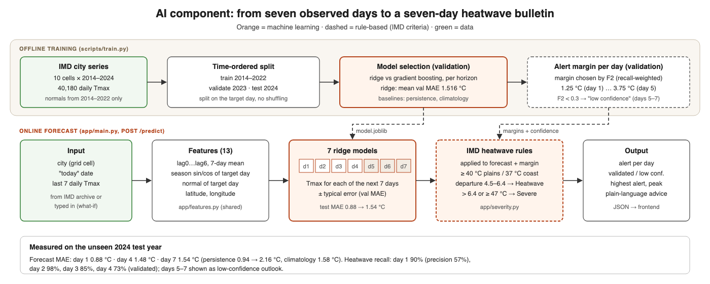
Direct multi-horizon forecasting: seven separate models; model h predicts the maximum temperature on day t + h from the 7 days up to day
t. Features (app/features.py, shared by training and serving): the last 7 daily Tmax values, their mean, the target day's season
(sine/cosine of day-of-year) and climatological normal (from 2014–2022 only), and the cell's latitude and longitude. Two model families (ridge regression,
gradient boosting) were compared with two baselines, persistence (same as today) and climatology (the normal for that date). The family with the
lowest mean validation error (ridge_regression, 1.516 °C) was deployed; 2024 was used only once, for the numbers below.
app/severity.py applies the IMD heatwave definitions: a heatwave is considered only if Tmax ≥ 40 °C (plains) or ≥ 37 °C (coastal).
Departure from normal 4.5–6.4 °C → Heatwave, > 6.4 °C → Severe heatwave; for plains, Tmax ≥ 45 °C → Heatwave and ≥ 47 °C → Severe. Coastal stations
(Kolkata, Chennai) have only a Heatwave category.
Regression pulls extreme values towards the mean, so a raw forecast rarely crosses the IMD thresholds (day 1 without a margin: recall 29%). Because a missed heatwave is costlier than a false alarm, each day's alert uses an upper-bound forecast (forecast + margin); the margin for each day was chosen on 2023 by F2 score. Where the best validation F2 was below 0.3, that day's alerts are labelled low-confidence. Validation contains only 14 heatwave city-days, so these choices are uncertain.
| Day | Persistence MAE | Climatology MAE | Grad. boosting MAE | ridge_regression MAE (deployed) | Alert margin | Val F2 | Test recall | Test precision | Alert confidence |
|---|---|---|---|---|---|---|---|---|---|
| Day 1 | 0.94 | 1.575 | 0.902 | 0.883 | 1.25 °C | 0.618 | 0.896 | 0.566 | validated |
| Day 2 | 1.379 | 1.575 | 1.262 | 1.235 | 2.75 °C | 0.38 | 0.979 | 0.299 | validated |
| Day 3 | 1.652 | 1.575 | 1.438 | 1.396 | 3.0 °C | 0.388 | 0.854 | 0.295 | validated |
| Day 4 | 1.84 | 1.575 | 1.536 | 1.475 | 3.25 °C | 0.381 | 0.729 | 0.257 | validated |
| Day 5 | 1.976 | 1.575 | 1.562 | 1.514 | 3.75 °C | 0.276 | 0.771 | 0.164 | low |
| Day 6 | 2.086 | 1.575 | 1.586 | 1.534 | 3.25 °C | 0.26 | 0.354 | 0.23 | low |
| Day 7 | 2.155 | 1.575 | 1.587 | 1.542 | 3.5 °C | 0.294 | 0.396 | 0.184 | low |
MAE in °C on the 2024 test year (48 actual heatwave city-days per horizon). The ML model beats persistence at every horizon, by a widening margin; by day 7 it is only slightly better than climatology, as expected from temperature history alone. Alert skill falls with lead time: days 1–4 validated, days 5–7 shown as an outlook. Day-1 confusion matrix (rows actual, columns predicted; Normal / Heatwave / Severe): [[3579, 33, 0], [5, 37, 2], [0, 3, 1]]; persistence day-1 recall/precision 0.688 / 0.647.
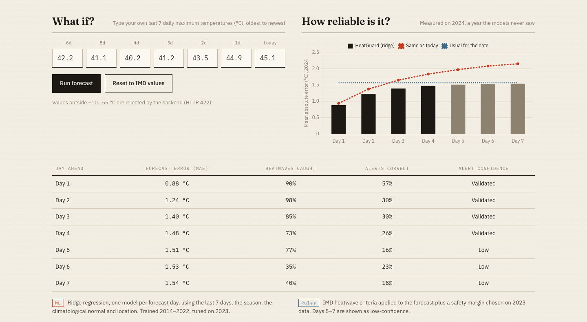
Backend (app/main.py, image ayushiranjan27/heatguard:2.0): a stateless FastAPI service with /health,
/cities, /observed (IMD history with normals and the actual next 7 days), /outlook (all 10 cities), /model-info
(per-horizon metrics) and POST /predict (7-day forecast). Invalid input returns 404/422 with clear messages; interactive docs at /docs.
Frontend (frontend/, image ayushiranjan27/heatguard-web:2.1): unprivileged nginx serving two pages and reverse-proxying
/api/ (and the API docs at /api/docs) to the backend, so the browser talks to one address and the backend stays internal. One
visual identity (a printed "heat bulletin": paper and ink for the interface, heat colours only for data; fonts and libraries bundled so nothing depends on the internet):
/): animated introduction whose figures all come from the live API: the highest-risk city for 27 May 2024, a "heat
stripes" band of every 2024 IMD daily maximum for Delhi, count-up key figures, the pipeline, a pulsing India map of the 10-city outlook, per-day accuracy and the
four experiments. Animations respect the reduced-motion setting./dashboard): 7-day heat bulletin for any city and date in 2014–2024: headline alert and advice, KPIs, a seven-day forecast
table with the actual IMD values, trend chart with uncertainty band, India map and ranking, what-if form, reliability panel.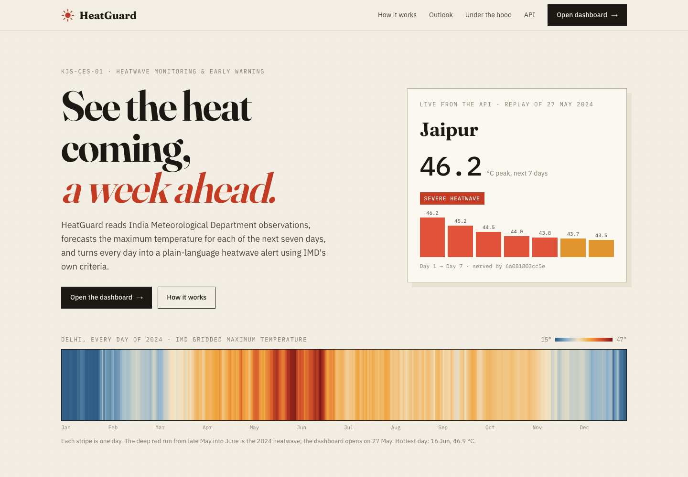
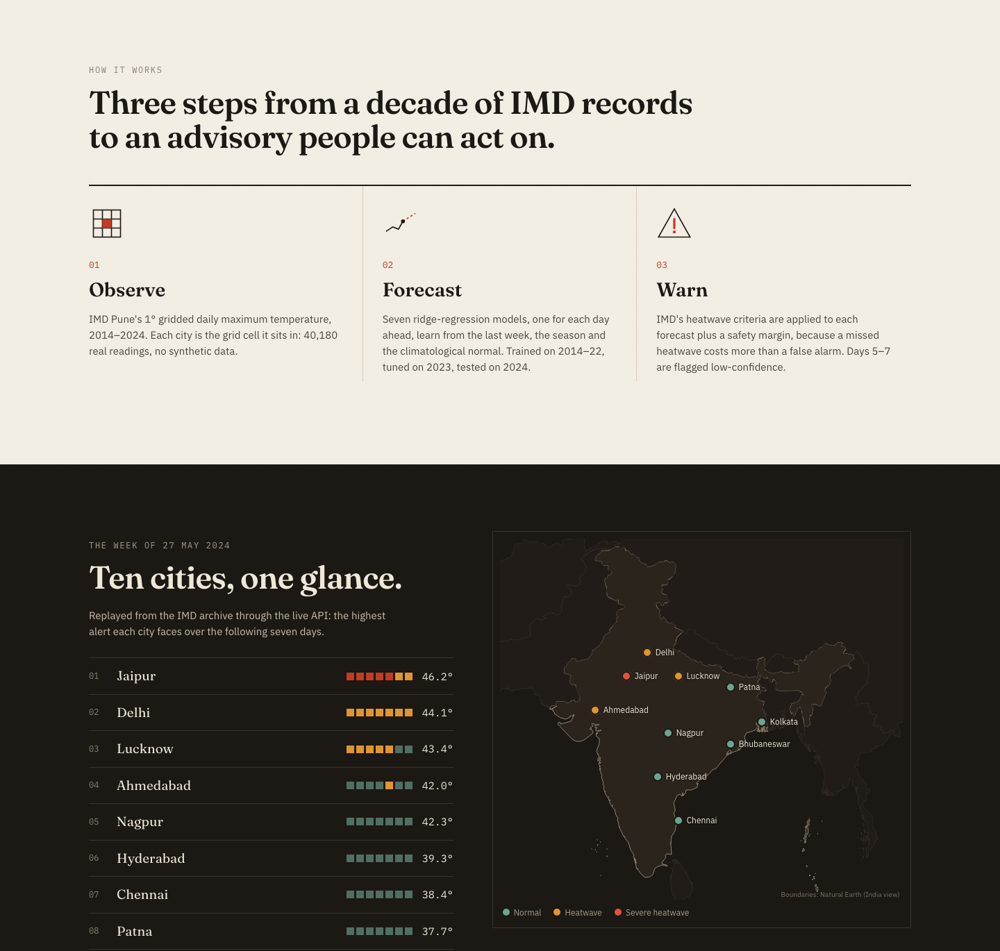
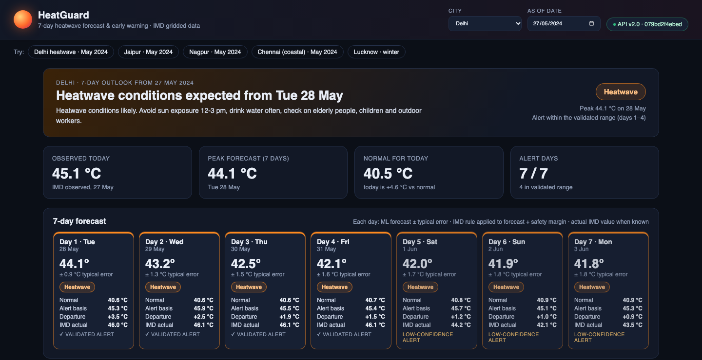
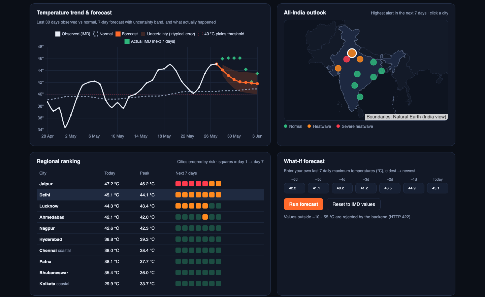
Aim (manual). Install Docker, pull and run images from Docker Hub, modify containers to run an application, and push it to Docker Hub.
About the experiment. A Docker image is a read-only, layered template holding an application with all its dependencies; a container is a running instance of that image. A registry such as Docker Hub stores images so that any machine can pull and run exactly the same software.
Experiment 2 is the packaging and publishing stage. The backend image bakes in the API code, the 7 trained models, their metrics and the IMD city series, so the forecast that was evaluated is the forecast that is served. The frontend image holds the landing page, dashboard and the nginx proxy. Docker Compose runs them together; Docker Hub distributes them. Every later experiment uses these exact images: Kubernetes pulls them (Exp 3) and the backend image is the workload measured in Exp 7 and Exp 8.
Files: Dockerfile, frontend/Dockerfile, frontend/nginx/default.conf.template, docker-compose.yml,
.dockerignore, experiments/exp2_docker.sh, experiments/release_frontend.sh.
Procedure. (1) Docker Desktop installed; Docker Hub account ayushiranjan27 created and docker login done by the student.
(2) Manual tasks: nginx pulled and run on port 8080, hello-world and Ubuntu run, Docker commands explored, nginx pushed as
ayushiranjan27/nginx-exp2:1.0. (3) Dockerfiles and Compose file written. (4) Both images built, run together, tested through the frontend proxy
including failure cases. (5) Both pushed for arm64 and amd64 with docker buildx. (6) Local images deleted, pulled back from Docker Hub and run.
(7) The redesigned frontend was released as 2.1 the same way.
Configuration.
Dockerfile
# HeatGuard backend: 7-day heatwave forecast API (Experiment 2: containerisation)
FROM python:3.13-slim
WORKDIR /srv
ENV PYTHONDONTWRITEBYTECODE=1 PYTHONUNBUFFERED=1
COPY requirements.txt .
RUN pip install --no-cache-dir -r requirements.txt
# Application code, trained model and the processed IMD city series used by /observed
COPY app/ app/
COPY models/ models/
COPY data/processed/ data/processed/
# Run as an unprivileged user
RUN useradd --create-home appuser
USER appuser
EXPOSE 8000
HEALTHCHECK --interval=15s --timeout=3s --start-period=10s \
CMD python -c "import urllib.request; urllib.request.urlopen('http://localhost:8000/health')"
CMD ["uvicorn", "app.main:app", "--host", "0.0.0.0", "--port", "8000"]
frontend/Dockerfile
# HeatGuard web frontend (landing page + dashboard): static app served by nginx (unprivileged, port 8080),
# with /api/ reverse-proxied to the backend given by API_URL.
FROM nginxinc/nginx-unprivileged:1.27-alpine
ENV API_URL=http://api:8000
COPY nginx/default.conf.template /etc/nginx/templates/default.conf.template
COPY public/ /usr/share/nginx/html/
EXPOSE 8080
HEALTHCHECK --interval=15s --timeout=3s --start-period=5s \
CMD wget -qO- http://127.0.0.1:8080/healthz || exit 1
docker-compose.yml
# Run HeatGuard v2 locally as two containers: backend API + web frontend.
# docker compose up -d -> open http://localhost:8080
name: heatguard
services:
api:
image: ayushiranjan27/heatguard:2.0
build: .
ports: ["8000:8000"] # direct API access (Swagger docs at http://localhost:8000/docs)
web:
image: ayushiranjan27/heatguard-web:2.1
build: ./frontend
environment:
API_URL: http://api:8000
ports: ["8080:8080"]
depends_on:
api:
condition: service_healthy
Evidence.
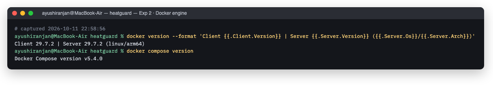
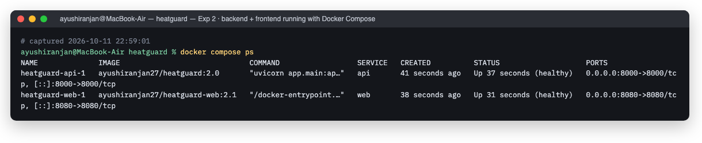
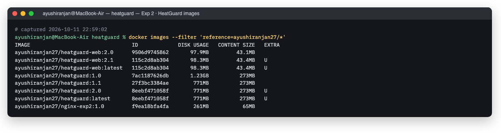
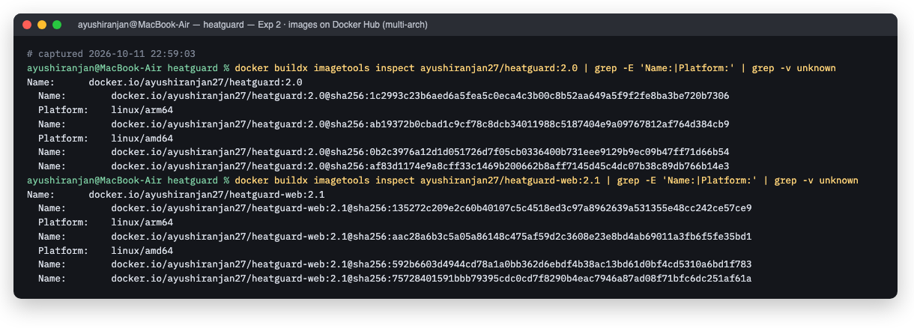
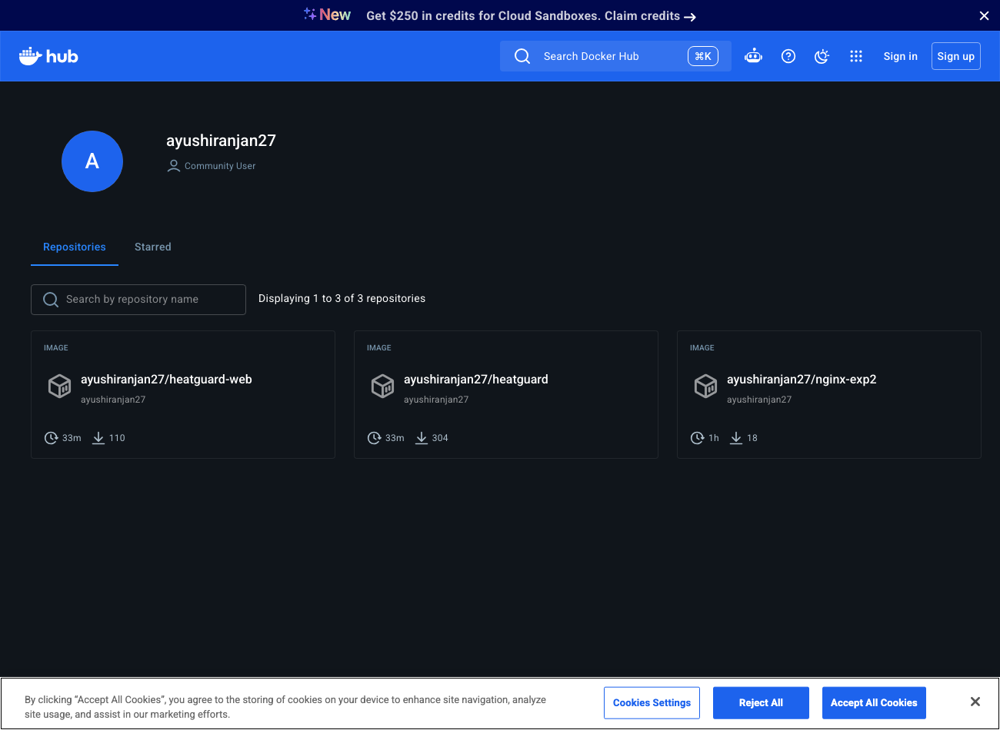
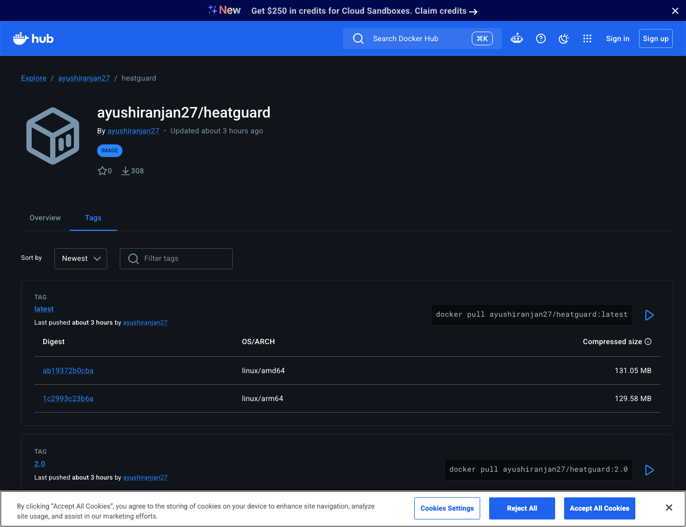
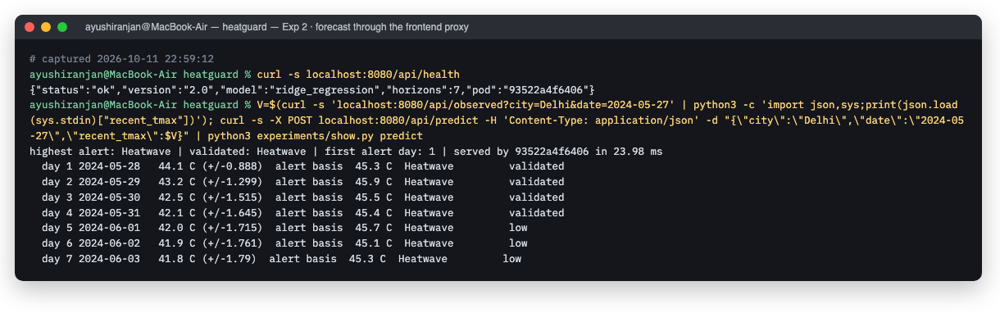
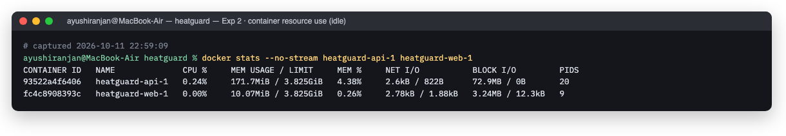
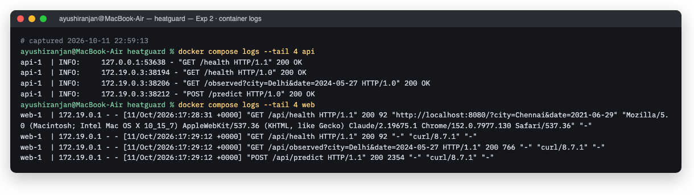
experiments/results/exp2_docker.log
### 3. Failure scenarios (through the frontend proxy)
# unknown city
{"detail":"unknown city 'Atlantis'. Supported: Delhi, Jaipur, Lucknow, Patna, Ahmedabad, Nagpur, Kolkata, Bhubaneswar, Hyderabad, Chennai"} HTTP 404
# 99.9 = IMD missing code
{"detail":[{"type":"value_error","loc":["body","recent_tmax"],"msg":"Value error, temperature 99.9 C is outside the plausible range -10..55 C","input"
# date outside the data
{"detail":"no IMD observations for Delhi for the 7 days up to 2030-05-01 (available: 2014-01-07 to 2024-12-31)"} HTTP 404
# backend stopped -> frontend stays up, API calls fail with a gateway error
/healthz HTTP 200 /api/health HTTP 504
# backend restarted -> /api/health HTTP 200
experiments/results/archive_v1/exp2_manual_tasks.log
$ docker run -d --name web-nginx -p 8080:80 nginx:latest
b7c80f153b262ff0084cc325669d72dc3b1c2341b9638a78e55df808dc980ac6
$ curl -s localhost:8080 | grep -i "<title>"
<title>Welcome to nginx!</title>
$ docker run --rm hello-world
Hello from Docker!
This message shows that your installation appears to be working correctly.
To generate this message, Docker took the following steps:
1. The Docker client contacted the Docker daemon.
2. The Docker daemon pulled the "hello-world" image from the Docker Hub.
Results. Backend image 136 MB and frontend image about 22 MB (compressed). Both containers report healthy; the frontend reaches the backend through
its /api/ proxy. Invalid input returns 404/422. With the backend stopped, the frontend stayed up and API calls returned HTTP 504
(gateway error) until the backend was restarted (HTTP 200). Docker Hub lists both images for linux/amd64 and linux/arm64, and the pulled
images ran healthy.
Conclusion. HeatGuard was containerised as two images, run as a multi-container application and published; anyone can start the full
application with docker compose up on Intel or Apple Silicon machines.
Aim (manual). Deploy an application using Kubernetes; use kubectl commands; expose an application, preferably the image created in the Docker experiment.
About the experiment. Kubernetes manages containers declaratively: a Deployment states how many copies (pods) of an image should run, a ReplicaSet enforces that number, and a Service gives the pods a stable address and balances traffic between them. Probes, rolling updates and rollbacks let an application keep running while it fails, scales or changes.
Experiment 3 is the operating stage. The two Docker Hub images from Experiment 2 run as two Deployments on a kind cluster. The backend is internal (ClusterIP) and is reached only through the frontend, which is the public entry point (NodePort 30080). The backend's CPU/memory limits are the values measured in Experiment 7. The experiment demonstrates exactly what a warning service needs: replicas, self-healing, scaling, safe rollback of a bad release and updates with zero dropped requests.
Files: k8s/kind-config.yaml, k8s/api.yaml, k8s/web.yaml, experiments/exp3_kubernetes.sh,
experiments/release_frontend.sh. The manual used the Killercoda playground; this project used kind (Kubernetes-in-Docker), a real
Kubernetes cluster running locally, so every step could be scripted and logged.
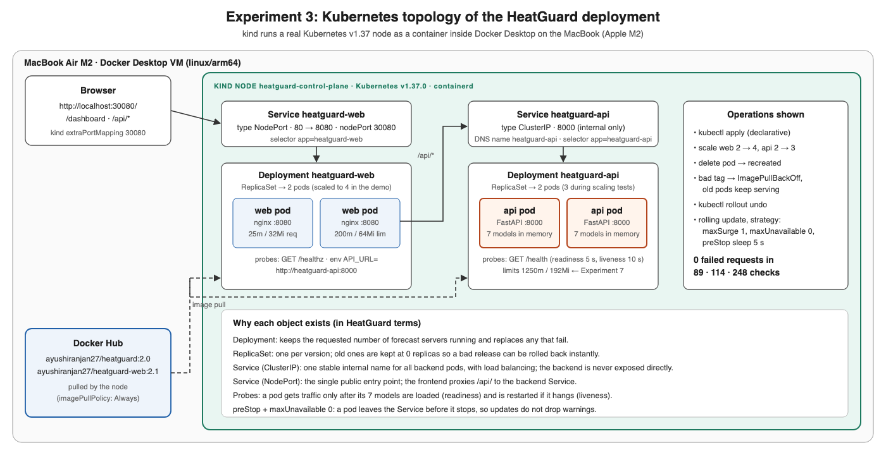
Configuration.
k8s/api.yaml
# Experiment 3: HeatGuard backend API (7-day forecast). Image from Docker Hub (Experiment 2).
# Internal only: ClusterIP service, reached by the frontend through its /api/ proxy.
# Resource limits = right-sized values measured in Experiment 7.
apiVersion: apps/v1
kind: Deployment
metadata:
name: heatguard-api
labels: {app: heatguard-api, tier: backend}
spec:
replicas: 2
selector:
matchLabels: {app: heatguard-api}
strategy:
type: RollingUpdate
rollingUpdate: {maxSurge: 1, maxUnavailable: 0} # never drop below the desired replica count
template:
metadata:
labels: {app: heatguard-api, tier: backend}
spec:
terminationGracePeriodSeconds: 20
containers:
- name: api
image: docker.io/DOCKERHUB_USER/heatguard:2.0
imagePullPolicy: Always
ports:
- containerPort: 8000
resources:
requests: {cpu: 250m, memory: 128Mi}
limits: {cpu: API_CPU_LIMIT, memory: API_MEM_LIMIT}
readinessProbe:
httpGet: {path: /health, port: 8000}
initialDelaySeconds: 3
periodSeconds: 5
livenessProbe:
httpGet: {path: /health, port: 8000}
initialDelaySeconds: 10
periodSeconds: 10
lifecycle:
preStop:
exec: {command: ["sleep", "5"]} # let the Service remove this pod before it stops
---
apiVersion: v1
kind: Service
metadata:
name: heatguard-api
spec:
type: ClusterIP
selector: {app: heatguard-api}
ports:
- port: 8000
targetPort: 8000
k8s/web.yaml
# Experiment 3: HeatGuard web frontend (nginx). Serves the app and proxies /api/ to the backend.
# Exposed outside the cluster on NodePort 30080 (mapped to localhost:30080 by kind-config.yaml).
apiVersion: apps/v1
kind: Deployment
metadata:
name: heatguard-web
labels: {app: heatguard-web, tier: frontend}
spec:
replicas: 2
selector:
matchLabels: {app: heatguard-web}
strategy:
type: RollingUpdate
rollingUpdate: {maxSurge: 1, maxUnavailable: 0}
template:
metadata:
labels: {app: heatguard-web, tier: frontend}
spec:
terminationGracePeriodSeconds: 20
containers:
- name: web
image: docker.io/DOCKERHUB_USER/heatguard-web:2.1
imagePullPolicy: Always
env:
- name: API_URL
value: http://heatguard-api:8000 # Kubernetes DNS name of the backend Service
ports:
- containerPort: 8080
resources:
requests: {cpu: 25m, memory: 32Mi}
limits: {cpu: 200m, memory: 64Mi}
readinessProbe:
httpGet: {path: /healthz, port: 8080}
initialDelaySeconds: 2
periodSeconds: 5
livenessProbe:
httpGet: {path: /healthz, port: 8080}
initialDelaySeconds: 5
periodSeconds: 10
lifecycle:
Evidence.
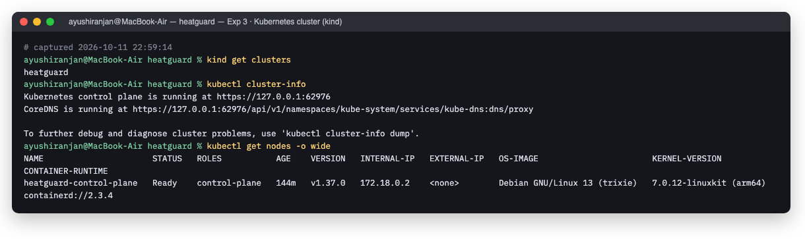
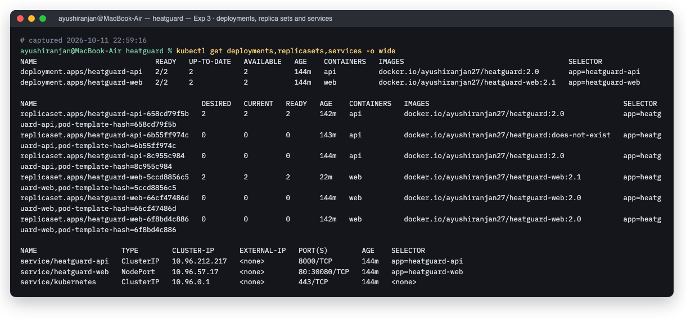
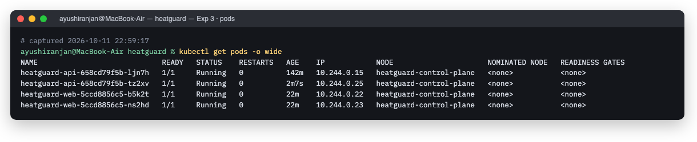
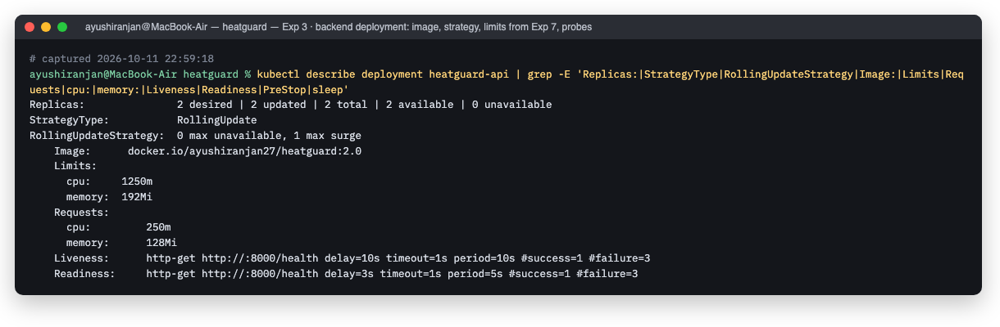
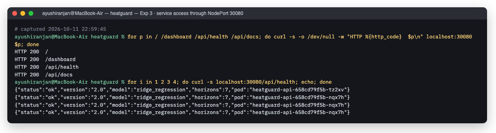
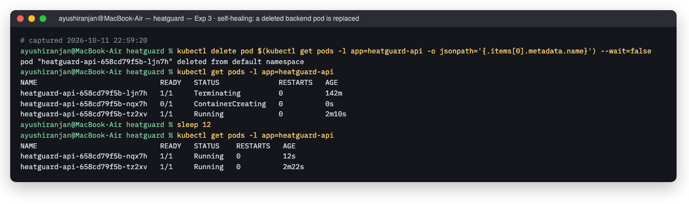
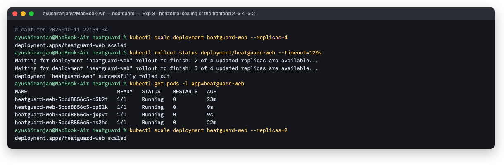
experiments/results/exp3_kubernetes.log
### 5. Failure scenario: bad backend image -> rollout blocked, old pods keep serving -> rollback
$ kubectl set image deployment/heatguard-api api=docker.io/ayushiranjan27/heatguard:does-not-exist
deployment.apps/heatguard-api image updated
$ kubectl get pods -l app=heatguard-api
NAME READY STATUS RESTARTS AGE
heatguard-api-6b55ff974c-5dl96 0/1 ImagePullBackOff 0 26s
heatguard-api-8c955c984-82rsc 1/1 Running 0 114s
heatguard-api-8c955c984-b7856 1/1 Running 0 114s
heatguard-api-8c955c984-jj74h 1/1 Running 0 41s
$ curl -s http://localhost:30080/api/health
{"status":"ok","version":"2.0","model":"ridge_regression","horizons":7,"pod":"heatguard-api-8c955c984-b7856"}
$ kubectl rollout undo deployment/heatguard-api
Warning: resource deployments/heatguard-api was previously managed with 'kubectl apply'. Rolling back will not update the kubectl.kubernetes.io/last-a
deployment.apps/heatguard-api rolled back
$ kubectl rollout status deployment/heatguard-api --timeout=180s
Waiting for deployment spec update to be observed...
Waiting for deployment "heatguard-api" rollout to finish: 1 old replicas are pending termination...
deployment "heatguard-api" successfully rolled out
$ kubectl get pods -l app=heatguard-api
NAME READY STATUS RESTARTS AGE
heatguard-api-6b55ff974c-5dl96 0/1 Terminating 0 26s
experiments/results/exp3_kubernetes.log
### 6. Rolling update of the backend with continuous availability check
# strategy maxSurge=1, maxUnavailable=0 and preStop sleep 5 (v1 without preStop: 39/40 OK)
$ kubectl rollout restart deployment/heatguard-api && kubectl rollout status deployment/heatguard-api
Waiting for deployment "heatguard-api" rollout to finish: 1 out of 3 new replicas have been updated...
Waiting for deployment "heatguard-api" rollout to finish: 1 out of 3 new replicas have been updated...
Waiting for deployment "heatguard-api" rollout to finish: 1 out of 3 new replicas have been updated...
Waiting for deployment "heatguard-api" rollout to finish: 1 out of 3 new replicas have been updated...
Waiting for deployment "heatguard-api" rollout to finish: 2 out of 3 new replicas have been updated...
Waiting for deployment "heatguard-api" rollout to finish: 2 out of 3 new replicas have been updated...
Waiting for deployment "heatguard-api" rollout to finish: 2 out of 3 new replicas have been updated...
Waiting for deployment "heatguard-api" rollout to finish: 2 out of 3 new replicas have been updated...
Waiting for deployment "heatguard-api" rollout to finish: 1 old replicas are pending termination...
Waiting for deployment "heatguard-api" rollout to finish: 1 old replicas are pending termination...
Waiting for deployment "heatguard-api" rollout to finish: 1 old replicas are pending termination...
deployment "heatguard-api" successfully rolled out
# availability: 89/89 requests returned HTTP 200 (failed: 0)
$ kubectl rollout restart deployment/heatguard-web && kubectl rollout status deployment/heatguard-web
Waiting for deployment "heatguard-web" rollout to finish: 1 out of 4 new replicas have been updated...
Waiting for deployment "heatguard-web" rollout to finish: 1 out of 4 new replicas have been updated...
Waiting for deployment "heatguard-web" rollout to finish: 1 out of 4 new replicas have been updated...
Waiting for deployment "heatguard-web" rollout to finish: 2 out of 4 new replicas have been updated...
Waiting for deployment "heatguard-web" rollout to finish: 2 out of 4 new replicas have been updated...
Waiting for deployment "heatguard-web" rollout to finish: 2 out of 4 new replicas have been updated...
experiments/results/frontend_2.1_release.log
### 2. Rolling update on Kubernetes with availability check (every 0.25 s through NodePort 30080)
$ kubectl get deployment heatguard-web -o wide
NAME READY UP-TO-DATE AVAILABLE AGE CONTAINERS IMAGES SELECTOR
heatguard-web 4/4 4 4 121m web docker.io/ayushiranjan27/heatguard-web:2.0 app=heatguard-web
$ kubectl set image deployment/heatguard-web web=docker.io/ayushiranjan27/heatguard-web:2.1
deployment.apps/heatguard-web image updated
$ kubectl rollout status deployment/heatguard-web --timeout=300s
Waiting for deployment spec update to be observed...
Waiting for deployment "heatguard-web" rollout to finish: 0 out of 4 new replicas have been updated...
Waiting for deployment "heatguard-web" rollout to finish: 1 out of 4 new replicas have been updated...
Waiting for deployment "heatguard-web" rollout to finish: 1 out of 4 new replicas have been updated...
Waiting for deployment "heatguard-web" rollout to finish: 1 out of 4 new replicas have been updated...
Waiting for deployment "heatguard-web" rollout to finish: 2 out of 4 new replicas have been updated...
Waiting for deployment "heatguard-web" rollout to finish: 2 out of 4 new replicas have been updated...
Waiting for deployment "heatguard-web" rollout to finish: 2 out of 4 new replicas have been updated...
Waiting for deployment "heatguard-web" rollout to finish: 2 out of 4 new replicas have been updated...
Waiting for deployment "heatguard-web" rollout to finish: 3 out of 4 new replicas have been updated...
Waiting for deployment "heatguard-web" rollout to finish: 3 out of 4 new replicas have been updated...
Waiting for deployment "heatguard-web" rollout to finish: 3 out of 4 new replicas have been updated...
Waiting for deployment "heatguard-web" rollout to finish: 3 out of 4 new replicas have been updated...
Waiting for deployment "heatguard-web" rollout to finish: 1 old replicas are pending termination...
Waiting for deployment "heatguard-web" rollout to finish: 1 old replicas are pending termination...
deployment "heatguard-web" successfully rolled out
# availability: 248/248 requests (landing page + /api/health) returned HTTP 200 (failed: 0)
$ kubectl get deployment heatguard-web -o wide
NAME READY UP-TO-DATE AVAILABLE AGE CONTAINERS IMAGES SELECTOR
heatguard-web 4/4 4 4 122m web docker.io/ayushiranjan27/heatguard-web:2.1 app=heatguard-web
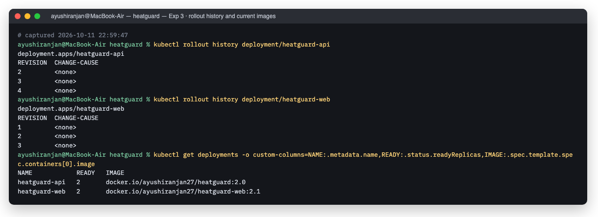
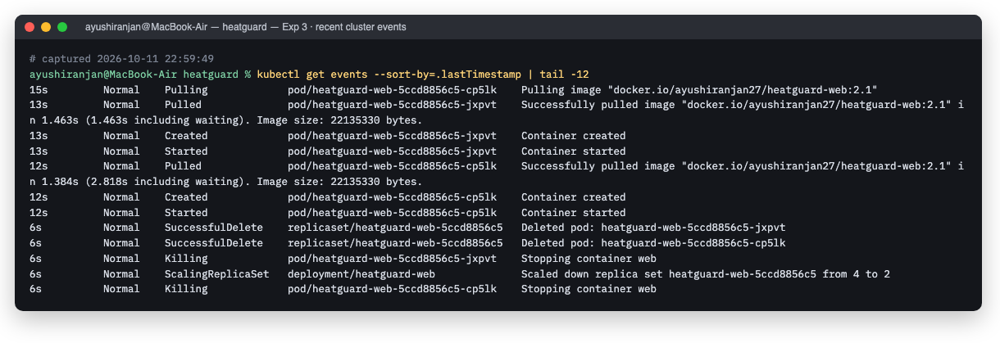
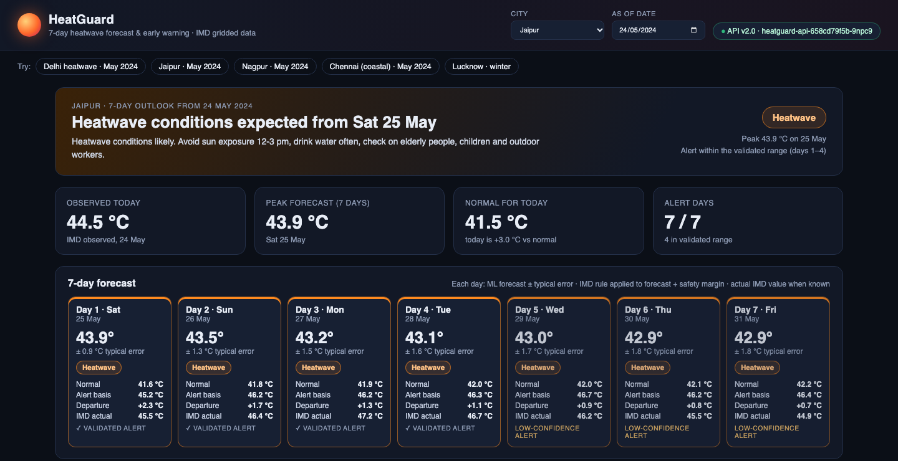
Results. Both images were pulled from Docker Hub; all pods became Ready; the frontend reached the backend through the heatguard-api
Service with requests spread across backend pods; scaling and self-healing worked; a non-existent image tag stopped in ImagePullBackOff while existing
pods kept serving, and kubectl rollout undo restored the Deployment. Rolling updates with checks every 0.25 s: 89/89 successful during the backend rollout; 114/114 successful during the frontend rollout.
The frontend release from 2.0 to 2.1 served 248/248 requests successfully.
No request failed, so the preStop delay and maxUnavailable 0 removed the single failure observed in v1 (39/40).
Conclusion. Kubernetes provided declarative deployment, service discovery between the two tiers, scaling, self-healing, safe rollback and zero-downtime updates for the warning service.
Aim (manual). Analyse CPU and memory utilisation of an over-provisioned workload, apply right-sizing, and measure cost and efficiency improvements without performance degradation.
About the experiment. Over-provisioning means reserving more CPU and memory than a workload uses, which costs money and energy without benefit. Right-sizing measures real usage under a representative load and sets limits slightly above the observed peak, then checks that performance holds.
Experiment 7 is the measurement stage. The workload is the HeatGuard backend image itself, answering 15,000 real 7-day forecast requests built from 2024 IMD data. The right-sized limits are not just reported: they are written into the backend Deployment in Experiment 3, and the same workload and cost model are reused in Experiment 8.
Files: loadtest/loadtest.py, experiments/run_config.py, experiments/rightsize.py,
experiments/summarize.py, results in experiments/results/exp7/.
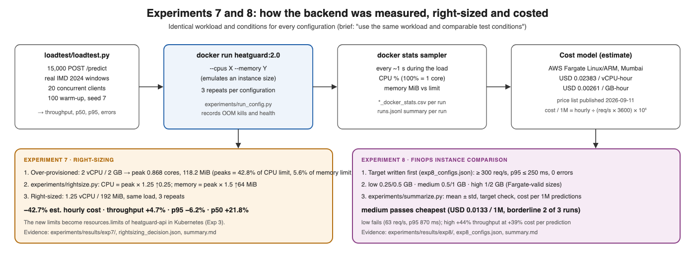
Procedure. (1) Run ayushiranjan27/heatguard:2.0 with 2 vCPU / 2 GB. (2) Send the fixed workload (15,000 POST /predict,
20 concurrent clients, 100 warm-up requests, fixed seed) while sampling docker stats about once per second; repeat 3 times. (3) Apply the manual's
rule, "slightly above peak with a safety buffer": CPU = peak × 1.25 rounded up to 0.25 vCPU; memory = peak × 1.5 rounded up to 64 MiB. (4) Re-run the same
workload 3 times with the new limits. (5) Estimate cost.
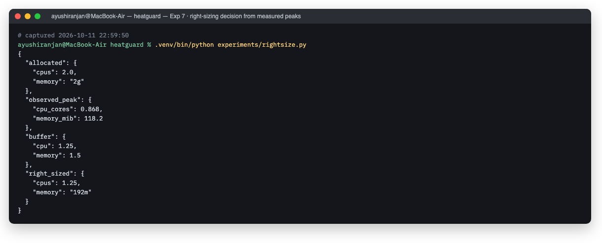
Right-sizing decision: observed peak 0.868 cores and 118.2 MiB → 1.25 vCPU / 192m.
| Configuration | CPU peak (% of 1 core) | CPU used (% of limit) | Memory peak (MiB) | Memory used (% of limit) | Throughput (req/s) | p50 latency (ms) | p95 latency (ms) | Errors | Est. USD / hour | Est. USD / 1M predictions |
|---|---|---|---|---|---|---|---|---|---|---|
| over-provisioned 2.0 vCPU / 2g | 85.7 ± 1.3 | 42.8 ± 0.7 | 113.9 ± 6.9 | 5.6 ± 0.3 | 416.8 ± 13.6 | 21.6 ± 2.1 | 162.1 ± 5.6 | 0 | 0.0529 | 0.0353 |
| right-sized 1.25 vCPU / 192m | 99.1 ± 3.6 | 79.3 ± 2.9 | 106.5 ± 1.3 | 55.5 ± 0.7 | 436.4 ± 18.4 | 26.3 ± 3.2 | 152.1 ± 6.8 | 0 | 0.0303 | 0.0193 |
Change after right-sizing: throughput +4.7%, p50 latency +21.8%, p95 latency -6.2%, estimated hourly cost -42.7%, estimated cost per million predictions -45.3%. Errors 0 and 0; no out-of-memory kills.
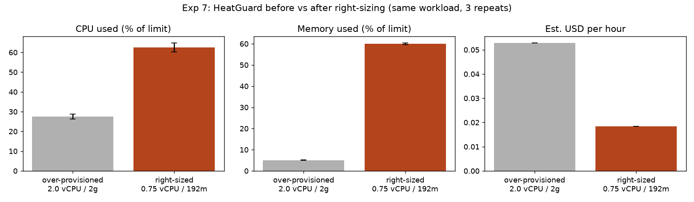
Cost basis (estimate, not an actual charge): AWS Fargate on-demand, Linux/ARM, Asia Pacific (Mumbai): USD 0.02383 per vCPU-hour and USD 0.00261
per GB-hour, from the AWS public price list (published 2026-09-11), saved as experiments/pricing/aws_ecs_ap-south-1_index.json. Hourly cost =
vCPU × 0.02383 + GB × 0.00261; cost per million predictions = hourly cost ÷ (throughput × 3600) × 106. No cloud account was used.
Conclusion. The backend used under half of the 2 allocated CPUs (42.8% of the limit) and about 6% of its memory; a single Uvicorn process cannot use more than about one core. After right-sizing, throughput changed by +4.7% and p95 latency by -6.2%, but median latency rose by +21.8% (21.6 → 26.3 ms), so "without performance degradation" holds for throughput and tail latency but not fully for median latency. Given the -42.7% estimated cost change, the trade-off is acceptable for this service.
Aim (manual). Compare different instance (resource) configurations for the same workload and identify the most cost-efficient option without performance degradation.
About the experiment. FinOps treats cloud spending as a shared engineering and finance decision whose goal is value per unit cost, not the lowest bill. Comparing instance sizes on the same workload, against a stated performance target, shows which size delivers the required service most cheaply.
Experiment 8 is the sizing decision. It reuses the Experiment 7 image, workload and cost model, and asks: if HeatGuard must serve at least 300 forecasts per second with p95 latency under 250 ms, which instance size does that most cheaply? The answer informs how large each backend replica in the Kubernetes deployment should be.
Files: experiments/exp8_configs.json (target + sizes, written before running), experiments/run_config.py,
experiments/summarize.py, results in experiments/results/exp8/.
Procedure (manual algorithm steps 1–10). Workload identical to Experiment 7. Candidates: three AWS Fargate-valid sizes emulated with Docker limits. Target rule: At most 25% lower throughput and at most 50% higher p95 latency than the over-provisioned reference (2 vCPU / 2 GB: ~417 req/s, p95 ~162 ms), no errors, no OOM kill. → throughput ≥ 300 req/s, p95 ≤ 250 ms, zero errors, no OOM kill. Each configuration ran 3 times.
| Configuration | CPU peak (% of 1 core) | CPU used (% of limit) | Memory peak (MiB) | Memory used (% of limit) | Throughput (req/s) | p50 latency (ms) | p95 latency (ms) | Errors | Est. USD / hour | Est. USD / 1M predictions | Meets target |
|---|---|---|---|---|---|---|---|---|---|---|---|
| low 0.25 vCPU / 512m | 27.1 ± 0.1 | 108.4 ± 0.4 | 119.7 ± 0.3 | 23.4 ± 0.1 | 62.9 ± 0.8 | 289.4 ± 2.5 | 869.6 ± 49.2 | 0 | 0.0073 | 0.0320 | no |
| medium 0.5 vCPU / 1g | 50.8 ± 0.6 | 101.7 ± 1.1 | 118.3 ± 0.8 | 11.6 ± 0.1 | 302.7 ± 8.3 | 76.3 ± 1.1 | 109.2 ± 2.9 | 0 | 0.0145 | 0.0133 | yes |
| high 1.0 vCPU / 2g | 83.1 ± 5.9 | 83.1 ± 5.9 | 114.5 ± 7.2 | 5.6 ± 0.3 | 435.7 ± 7.3 | 22.2 ± 1.4 | 153.0 ± 3.1 | 0 | 0.0290 | 0.0185 | yes |
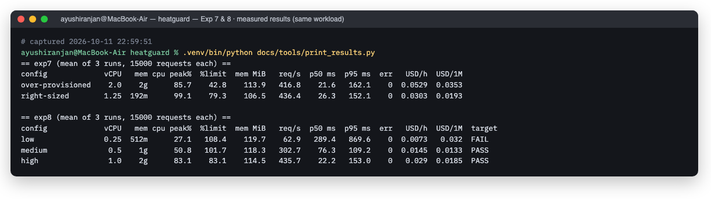
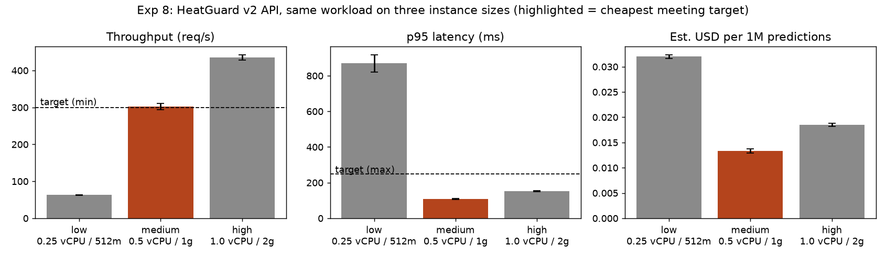
Result. The most cost-efficient configuration meeting the target is medium (0.5 vCPU / 1g) at an estimated USD 0.0133 per million predictions. It passes on the mean of 3 runs, but only 2 of 3 individual runs reached 300 req/s (runs: 295.5, 300.7, 311.8 req/s), so it is a borderline choice with little headroom. low (0.25 vCPU) failed: throughput 62.9 < 300 req/s, p95 869.6 > 250 ms. At 0.25 vCPU the backend was CPU-saturated and its Docker health check timed out under load; in Kubernetes this would trigger liveness restarts.
Conclusion. The cheapest size per hour (low) was the most expensive per prediction because it served so few requests: cost must be judged per unit of useful work. Moving from medium to high (1.0 vCPU) raised throughput by +43.9% at +39.1% cost per prediction; it is the safer choice if more headroom above the target is wanted.
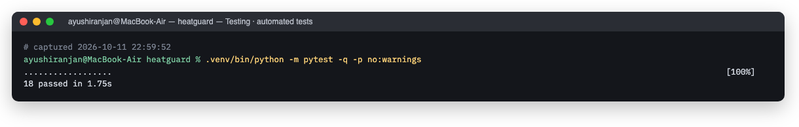
| Test | Type |
|---|---|
| test_health_reports_loaded_model | representative / rules |
| test_cities_list | representative / rules |
| test_observed_returns_real_imd_window | representative / rules |
| test_observed_history_for_charts | representative / rules |
| test_predict_returns_7_consecutive_days | representative / rules |
| test_predict_hot_spell_raises_alert | representative / rules |
| test_predict_winter_is_normal | representative / rules |
| test_forecast_close_to_actual_on_real_day | representative / rules |
| test_outlook_covers_all_cities_sorted_by_risk | representative / rules |
| test_model_info_has_7_horizons | representative / rules |
| test_unknown_city_404 | invalid input / failure |
| test_wrong_number_of_values_422 | invalid input / failure |
| test_implausible_temperature_422 | invalid input / failure |
| test_non_numeric_and_bad_date_422 | invalid input / failure |
| test_observed_outside_data_range_404 | invalid input / failure |
| test_observed_history_too_long_422 | invalid input / failure |
| test_severity_rules | representative / rules |
| test_day_of_year_aligns_leap_and_non_leap | representative / rules |
Failure scenarios demonstrated on the running system: unknown city (404), 3 values instead of 7 (422), IMD missing-value code 99.9 °C (422), invalid date (422), date outside the data (404), backend stopped behind the frontend (gateway error, recovered on restart), non-existent image tag in Kubernetes (ImagePullBackOff, rolled back), deleted pod (recreated). In the dashboard, rejected what-if values are shown as an error message.
Summary of measured results.
| Area | Result |
|---|---|
| Forecast accuracy (2024) | MAE 0.883 °C (day 1) → 1.542 °C (day 7), better than persistence and climatology |
| Heatwave alerts (2024) | day 1 recall 90%, precision 57%; days 1–4 validated |
| Exp 2 | 2 images, multi-arch, pushed and pulled back; failure cases handled |
| Exp 3 | scaling, self-healing, rollback; rolling updates 89/89 successful during the backend rollout; 114/114 successful during the frontend rollout; frontend 2.1 release 248/248 |
| Exp 7 | 2.0 vCPU / 2g → 1.25 vCPU / 192m; est. cost/hour -42.7% |
| Exp 8 | cheapest passing: medium (0.5 vCPU), USD 0.0133 per 1M predictions (estimate) |
| Tests | 18 passed in 2.38s |
| Requirement (assignment brief) | Implementation | Evidence | Status |
|---|---|---|---|
| Working prototype: input → processing → output | Landing page + dashboard + API: city/date (or 7 typed values) → 7-day forecast, alerts, advice, map | §8, terminal capture t06, exp2_docker.log | Verified |
| AI/ML component appropriate to use case | 7 ridge-regression models (one per forecast day) on IMD data, compared with gradient boosting and 2 baselines | §7, models/metrics.json, train_output.txt | Verified |
| Rule-based part identified | IMD heatwave criteria (app/severity.py), labelled rule-based throughout | §7.2, test_severity_rules | Verified |
| Real / public dataset documented | IMD Pune 1° gridded Tmax 2014–2024, download script with retries | §4, data/processed/city_tmax.csv | Verified |
| Labelled architecture diagram | Architecture, request flow, experiment map, Kubernetes topology, ML pipeline, Exp 7/8 method | §5, §6, §7, §9 | Verified |
| Exp 2: containerise, run, push to Docker Hub | Backend + frontend images, Compose, failure cases, multi-arch push, pull-and-run; manual nginx/hello-world/ubuntu tasks | §9.1, captures t01–t07, Docker Hub pages, exp2_docker.log | Verified |
| Exp 3: deploy, expose, pod status, scaling/recovery | kind: 2 Deployments, ClusterIP + NodePort, probes, scaling, self-healing, bad-image rollback, rolling updates with availability checks | §9.2, captures t08–t16, exp3_kubernetes.log, frontend_2.1_release.log | Verified |
| Exp 7: measure CPU/memory, right-size, compare | docker stats under a fixed load, rule-based right-sizing, 3 repeats each, limits reused in Kubernetes | §9.3, capture t17–t18, exp7/* | Verified |
| Exp 8: same workload on configs, cheapest meeting target | 3 Fargate-valid sizes, target fixed before the runs, cost per 1M predictions | §9.4, capture t18, exp8/*, exp8_configs.json | Verified |
| Exp 7 & 8 same workload, cost basis stated | Same loadtest.py, seed, 15,000 requests, 20 clients; AWS public price list saved; costs labelled estimates | pricing/aws_ecs_ap-south-1_index.json | Verified |
| Representative inputs tested | pytest + curl on real IMD windows; frontend scenarios (Delhi, Jaipur, Nagpur, Chennai, Lucknow) | §10, capture t19, pytest_output.txt | Verified |
| ≥1 invalid-input / failure scenario | unknown city 404, wrong length 422, 99.9 °C 422, bad date 422, date outside data 404, backend down 504, bad image tag, deleted pod | §10, exp2_docker.log, exp3_kubernetes.log | Verified |
| Measurements (error, latency, throughput, CPU/mem, cost) | MAE per horizon, alert recall/precision, req/s, p50/p95, docker stats, estimated USD | §7, §9.3, §9.4 | Verified |
| Clean-environment setup | v1: fresh clone + venv + tests + retraining reproduced results; v2: images deleted locally, pulled from Docker Hub and run with Compose. Full README not repeated on a second machine | exp2_docker.log §5, capture t02 | Partially Verified |
| Demonstration video (5 min) | Recorded and shared on Google Drive (public link) | link on the title page | Verified |
| Version | What changed | Evidence |
|---|---|---|
| v1.0 / v1.1 | Single container with built-in dashboard, next-day forecast; v1.1 corrected the coastal heatwave rule | experiments/results/archive_v1/ |
| v2.0 | 7-day forecast; separate backend and frontend images; Docker Compose; two-tier Kubernetes with zero-downtime settings; all experiments re-run | experiments/results/ |
| frontend 2.1 | Animated landing page and redesigned dashboard; frontend-only change released with a measured rolling update; backend stays 2.0 | frontend_2.1_release.log |
HeatGuard turns real IMD observations into 7-day maximum-temperature forecasts and IMD-style heatwave alerts, with each day's reliability measured and shown to the user. The same two images were containerised and published (Exp 2), operated on Kubernetes with scaling, recovery and zero-downtime updates (Exp 3), right-sized from measured usage with the limits fed back into the deployment (Exp 7), and sized against an explicit service target (Exp 8). Because each experiment acts on the same artifacts and hands its result to the next, together they form one pipeline from data and model to a cost-aware, resilient early-warning service.
This project was developed with the help of Claude (Anthropic), an AI assistant, used for analysing the assignment documents, writing code and scripts,
drawing diagrams and drafting this report. All code was executed on the student's machine; all results, logs and screenshots were produced by real runs and
were checked by the student. The student created the Docker Hub account, performed the docker login and recorded the demonstration video herself.
Command outputs are copied verbatim from the files in experiments/results/ (Docker build progress lines omitted for length). Terminal figures are
renderings of real command output captured on the student's machine by docs/tools/capture_terminal.py; the captured text is saved next to the logs.
Screenshots of the web pages and Docker Hub were captured with headless Google Chrome from the running services.